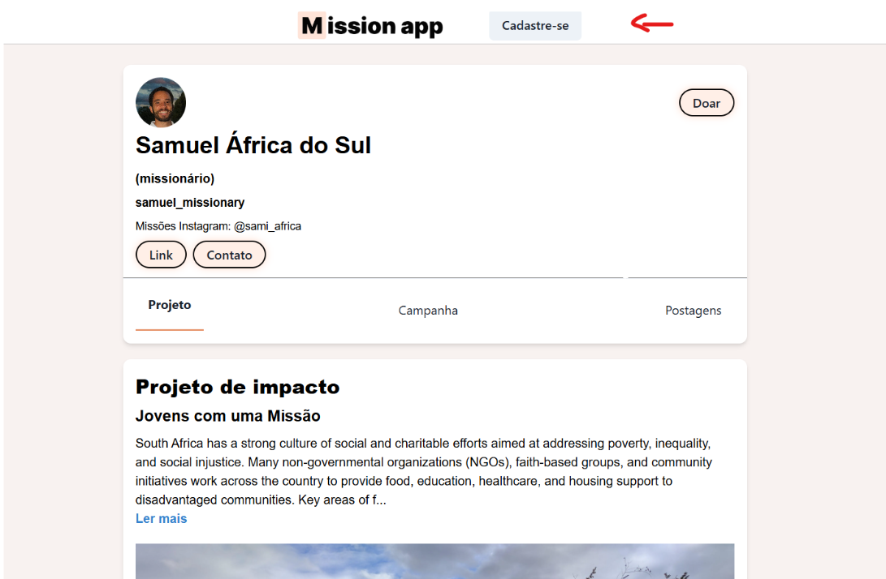
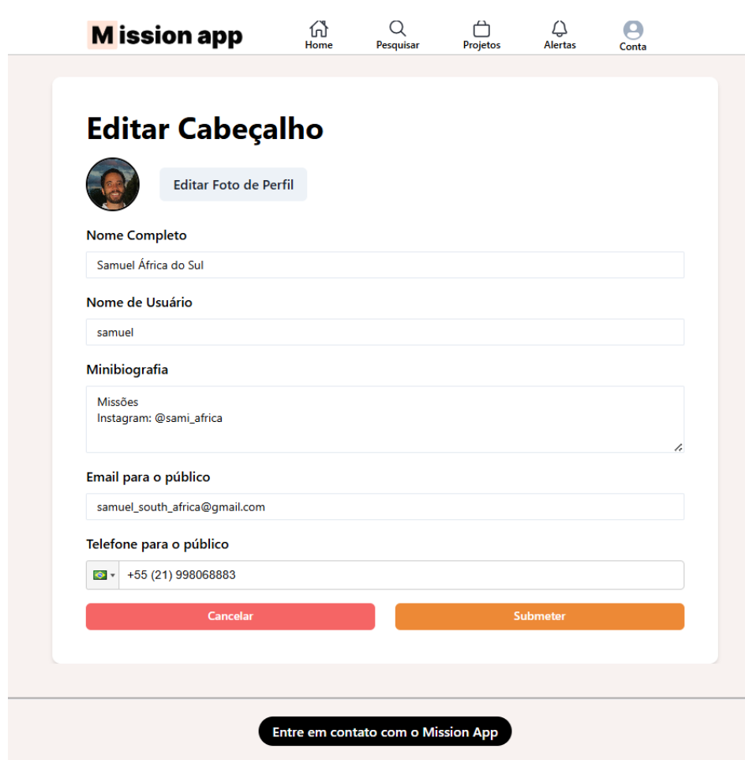
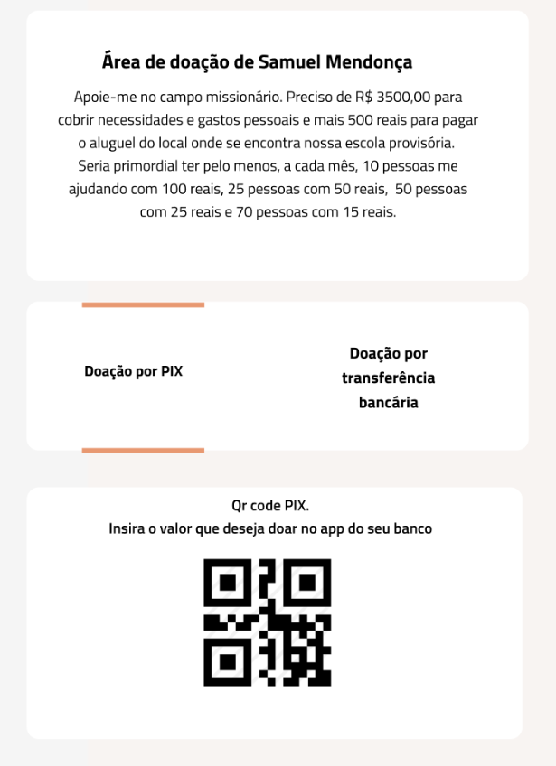
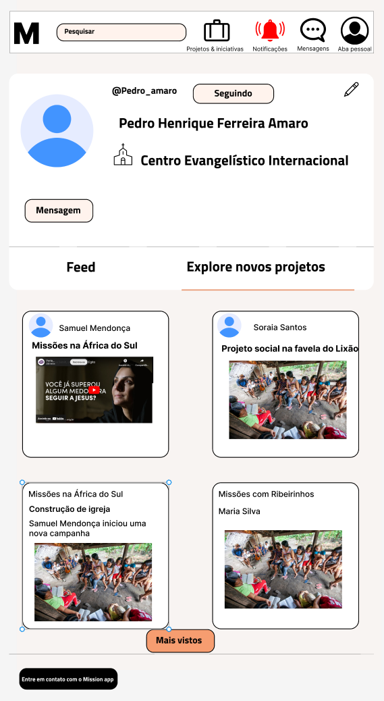

Especificação de Requisitos do Mission App
Plataforma para conscientizar Igrejas do trabalho missionário realizado ao redor do mundo através de Campanhas Missionárias recorrentes.
Links: GitHub | Design Figma
📌 Requisitos Funcionais
1. Autenticação e Acesso
1.1 Login (RF 1.1)
O sistema deve permitir que usuários (apoiadores, missionários e administradores) acessem suas contas utilizando credenciais de e-mail e senha previamente cadastradas.
1.2 Redefinição de Senha (RF 1.2)
O sistema deve prover um fluxo de recuperação de acesso ("esqueci minha senha") onde o usuário informa seu e-mail e recebe um link seguro para definir uma nova senha.
1.3 Aprovação de Cadastro (RF 1.3)
O perfil de Administrador deve possuir uma área exclusiva para visualizar solicitações de cadastro de missionários. O acesso do missionário ao sistema só deve ser liberado após a aprovação manual realizada nesta área.
1.4 Acesso sem Autenticação em Rotas Públicas (RF 1.4)
O sistema deve permitir que usuários não autenticados acessem rotas públicas com privilégios apenas de leitura. As rotas públicas devem ser as que contêm ações relacionadas às atividades abaixo:
- Perfil do missionário
- Perfil de um usuário comum
- Área de doação (apenas visão de um usuário comum)
- Projetos de um missionário
- Pesquisar perfis
1.4.1 Fluxo de Visitantes e Alertas (RF 1.4.1)
O usuário não autenticado deve ter exibido na página um botão pedindo para que se cadastre. Além disso, ao tentar acessar uma rota que exige autenticação (como dar Likes em postagens), o usuário deve receber um alerta pedindo para que ele se cadastre.

1.5 Acesso com Autenticação (RF 1.5)
O sistema deve permitir que usuários autenticados acessem as rotas com todos os seus respectivos privilégios.
2. Cadastro de Apoiador
2.1 Cadastro de Apoiador (RF 2.1)
O sistema deve permitir o auto-cadastro de usuários apoiadores, solicitando dados pessoais, de contato e informações sobre sua comunidade de fé. As informações são:
- Email;
- Senha;
- Nome de Usuário;
- Nome Completo;
- Comunidade de Fé (opcional):
- Caso exista a comunidade de fé no banco de dados, o usuário apoiador simplesmente seleciona esta.
- Caso não exista, o usuário apoiador deverá clicar no botão
“Adicionar nova Comunidade de Fé” e criar uma nova comunidade de
fé, colocando:
- Nome da Comunidade de fé
- Telefone (Opcional)
- Nome do Pastor (Obrigatório)
- Telefone do Pastor (Opcional)
- Endereço da Igreja (através do CEP) (Futura implementação)
2.3 Gerenciamento de Perfil do Apoiador (RF 2.3)
- Os usuários apoiadores devem poder visualizar e editar suas informações cadastrais (Nome, Minibiografia, Comunidade de Fé).
- O sistema deve permitir o envio (upload) de uma foto de perfil, aplicando compressão automática para otimização.
- O sistema deve validar se o "Nome de Usuário" escolhido é único em toda a plataforma.
3. Cadastro de Missionário
3.1 Cadastrar Missionário (RF 3.1)
3.1.1 Informações necessárias para o cadastro de um missionário
- Dados:
- Email;
- Telefone pessoal do missionário;
- Nome de usuário;
- Nome Completo;
- Comunidade de Fé:
- Caso exista a comunidade de fé no banco de dados, o usuário apoiador simplesmente seleciona esta.
- Caso não exista, o usuário apoiador deverá clicar no botão
“Adicionar nova Comunidade de Fé” e criar uma nova comunidade de
fé, colocando:
- Nome da Comunidade de fé
- Telefone (Opcional)
- Nome do Pastor (Obrigatório)
- Telefone do Pastor (Opcional)
- Endereço da Igreja (através do CEP) (Futura implementação)
- Nome do Pastor;
- Telefone do Pastor (Obrigatório);
- Telefone da Igreja ou responsável pela igreja (Obrigatório);
- Agência Missionária (Obrigatório);
- Telefone de contato com a Agência Missionária (Obrigatório).
3.1.2 Agências missionárias:
As agências devem ser exibidas em um select. O missionário deve escrever o nome de sua agência e selecionar uma dentre as previamente cadastradas. Caso não haja, o missionário pode cadastrar uma Agência missionária.
3.1.3 Gerenciamento de Perfil do Missionário (RF 3.3)
- Os usuários missionários devem poder visualizar e editar suas informações cadastrais (Nome, Minibiografia, Comunidade de Fé).
- O sistema deve permitir o envio (upload) de uma foto de perfil, aplicando compressão automática para otimização.
- O sistema deve validar se o "Nome de Usuário" escolhido é único em toda a plataforma.
3.2 Email de Verificação do Missionário (RF 3.2)
O missionário deve verificar o email enviado para o seu email utilizado no cadastro. O email deve ser verificado em um prazo de até 7 dias. Caso contrário, o seu cadastro deve ser deletado.
3.3 Email de Alerta para o Administrador (RF 3.3)
O administrador recebe um e-mail com as informações do novo missionário cadastrado, somente após o missionário confirmar o seu email de verificação.
3.4 Aprovação do Administrador (RF 3.4)
O administrador faz a aprovação pelo painel de gerenciamento de missionários.
3.5 Primeiro Login do Missionário (RF 3.5)
Ao fazer login na plataforma, o missionário deve completar seu cadastro com as informações importantes na bio, conforme especificado no RF 10.5 (Edição do Cabeçalho).
4. Papéis e Privilégios do Missionário
4.1 Gerenciamento de Identidade e Perfil do Missionário (RF 4.1)
O usuário com perfil de "Missionário" possui uma página dedicada e tem permissão para gerenciar integralmente sua apresentação na plataforma:
4.1.1 Edição de Cabeçalho (RF 4.1.1)
Permissão para personalizar a foto de perfil (avatar), nome de exibição e minibiografia.
4.1.2 Edição de Conta (RF 4.1.2)
Acesso à área de configuração privada para atualização de dados sensíveis (e-mail, senha) e dados eclesiásticos (comunidade de fé e pastor responsável).
4.2 Gestão de Projetos e Conteúdo do Missionário (RF 4.2)
4.2.1 Projetos de Impacto (RF 4.2.1)
O missionário tem o privilégio exclusivo de criar, editar e excluir "Projetos de Impacto", que servem como vitrine principal para sua causa.
4.2.2 Criação de Postagens (RF 4.2.2)
Permissão para criar publicações (com imagem e legenda) para comunicar atualizações do campo missionário aos seus seguidores.
4.3 Configuração Financeira (Recebimento de Doações) (RF 4.3)
4.3.1 Área de Doações (RF 4.3.1)
O missionário deve ter acesso a uma área de configuração para definir como deseja receber recursos.
4.3.2 Métodos de Recebimento (RF 4.3.2)
O sistema deve permitir que o missionário cadastre e edite suas chaves PIX e dados para Transferência Bancária, tornando essas informações acessíveis aos apoiadores no momento da doação.
4.4 Interação Social e Consumo de Conteúdo do Missionário (RF 4.4)
4.4.1 Rede de Conexões (RF 4.4.1)
O missionário pode "Seguir" outros missionários para acompanhar seus ministérios.
4.4.2 Visualização de Feeds (RF 4.4.2)
O sistema deve fornecer duas visões de timeline para o missionário:
- Feed Pessoal: Visualização cronológica de suas próprias postagens.
- Feed de Amigos/Conexões: Visualização das postagens realizadas pelos usuários que ele segue.
4.5 Ferramentas de Busca e Descoberta do Missionário (RF 4.5)
4.5.1 Pesquisa Global (RF 4.5.1)
Acesso à ferramenta de busca para localizar especificamente outros usuários (apoiadores ou missionários) e projetos na plataforma.
4.5.2 Exploração (RF 4.5.2)
Acesso à aba "Projetos de Impacto", permitindo que o missionário conheça outras iniciativas e expanda sua rede de intercessão e cooperação.
5. Papéis e Privilégios do Apoiador
5.1 Gerenciamento de Perfil e Conta do Apoiador (RF 5.1)
O usuário com perfil de "Apoiador" possui uma área pessoal na plataforma e permissões para gerenciar seus dados:
5.1.1 Edição de Cabeçalho (RF 5.1.1)
Acesso para personalizar informações públicas básicas, como foto de perfil e dados de exibição.
5.1.2 Área de Conta Pessoal (RF 5.1.2)
Acesso às configurações privadas para gerenciamento de credenciais (e-mail, senha) e dados eclesiásticos.
5.2 Interação Social do Apoiador (Seguir) (RF 5.2)
5.2.1 Regra de Conexão (RF 5.2.1)
O apoiador pode "Seguir" perfis de missionários para receber suas atualizações no feed.
5.2.2 Restrição (RF 5.2.2)
O sistema não deve permitir que apoiadores sigam outros apoiadores; a rede de conexões é focada no relacionamento Apoiador -> Missionário.
5.3 Consumo de Conteúdo e Feed do Apoiador (RF 5.3)
5.3.1 Aba Feed (RF 5.3.1)
O usuário tem acesso a um feed personalizado que agrega cronologicamente as postagens e atualizações exclusivas dos missionários que ele segue.
5.4 Ferramentas de Descoberta e Recomendação do Apoiador (RF 5.4)
5.4.1 Aba Projetos de Impacto (RF 5.4.1)
O sistema deve exibir uma seção dedicada com recomendações de projetos e campanhas missionárias (curadas por administradores ou algoritmo), incentivando o apoio a novas causas.
5.4.2 Pesquisa (RF 5.4.2)
Acesso à ferramenta de busca global para localizar ativamente missionários específicos ou projetos de interesse.
5.5 Interação com Missionários e Doação do Apoiador (RF 5.5)
5.5.1 Visualização de Perfis (RF 5.5.1)
O apoiador pode acessar a página pública de qualquer missionário para visualizar na íntegra biografia, informações de contato, detalhes do Projeto de Impacto, campanhas e feed de postagens públicas.
5.5.2 Realização de Doações (RF 5.5.2)
A partir do perfil do missionário, o usuário tem acesso direto à "Área de Doações" para efetuar contribuições financeiras através dos meios de pagamento configurados (PIX, Transferência).
6. Barra de Navegação (NavBar)
6.1 Estrutura Geral (RF 6.1)
O sistema deve possuir uma barra de navegação principal (NavBar) visível em todas as páginas, garantindo acesso rápido às funcionalidades essenciais da plataforma. Esta barra deve adaptar seu comportamento dependendo se o usuário está autenticado ou é um visitante.
6.2 Itens de Navegação para Usuário Autenticado (RF 6.2)
A barra de navegação deve conter os seguintes atalhos:
6.2.1 Home (RF 6.2.1)
Redireciona o usuário para seu feed principal.
6.2.2 Pesquisar (RF 6.2.2)
Acesso à funcionalidade de busca de missionários e projetos.
6.2.3 Projetos (RF 6.2.3)
Acesso direto à área de exploração de novos projetos, conforme Requisito 14.
6.2.4 Conta (RF 6.2.4)
Redireciona o usuário para a área Configuações de conta, o qual é diferente da edição de Cabeçalho no Perfil Principal.
O usuário (missionário ou apoiador) irá para uma página pessoal onde irá mexer nas suas Configurações de Conta, conforme definido Requisito 15.
6.2.5 Sair (RF 6.2.5)
Funcionalidade para encerrar a sessão do usuário.
6.3 Comportamento do Visitante na NavBar (RF 6.3)
Para usuários não autenticados, a barra de navegação deve exibir o logotipo da plataforma (que redireciona para a página inicial/landing page) e um botão de destaque "Cadastre-se" ou "Login", incentivando a entrada na plataforma.
7. Busca e Filtragem
7.1 Acesso à Busca (RF 7.1)
O sistema deve permitir iniciar uma pesquisa através de um ícone dedicado na barra de navegação ou um campo de entrada de texto explícito no cabeçalho.
7.2 Critérios de Filtragem (RF 7.2)
O motor de busca deve permitir encontrar resultados baseados em:
- Nome do Missionário ou Usuário
- Título do Projeto de Impacto
- Título da Campanha
7.3 Exibição de Resultados (RF 7.3)
O sistema deve apresentar os resultados em uma lista ou grade, exibindo a foto de perfil e o nome/título correspondente, permitindo que o usuário clique para visitar o perfil, projeto ou campanha encontrado.
8. Postagens
8.1 Criação de Postagens (RF 8.1)
- Apenas o perfil missionário deve poder criar publicações contendo uma legenda, até 3 imagens, um link externo opcional e um link embed do YouTube opcional.
- Cada postagem será composta de:
- Avatar contendo a foto do missionário
- Nome do missionário
- Legenda
- Até 3 imagens anexadas
- Link externo (opcional)
- Link embed do YouTube (opcional)
- O sistema deve obrigar o preenchimento da legenda.
- Cada imagem publicada deve incrementar o contador global de imagens do missionário, limitado a 50 imagens no total.
8.2 Gerenciamento de Postagens (RF 8.2)
O missionário deve poder excluir suas postagens. A exclusão deve remover tanto o registro visual quanto o arquivo de imagem armazenado.
Ao atingir o limite de 50 imagens no total, o sistema deve exibir um alerta informando que o missionário atingiu o limite de 50 imagens. Caso ele opte por prosseguir com o envio de uma nova imagem, o sistema deve solicitar confirmação explícita e substituir a imagem mais antiga pela nova imagem enviada.
8.3 Comentários nas Postagens (RF 8.3)
- Não haverá comentários inicialmente.
- Deixar a arquitetura preparada futuramente para receber essa feature.
- A princípio, os comentários não possuem nenhum sistema de citação ou comentários aninhados.
8.4 Likes das Postagens (RF 8.4)
- Usuários de qualquer tipo podem marcar postagens com "Gostei" (Like).
- O usuário pode remover seu Like (Descurtir) a qualquer momento.
8.5 Interação de Segurança nas Postagens (RF 8.5)
Os usuários devem poder clicar em um ícone de "3 pontos" (Kebab Menu) na postagem para acessar uma janela modal com o botão "Denunciar". O fluxo está definido no Requisito 16.
9. Projetos de Impacto
9.1 Cadastro de Projeto (RF 9.1)
Somente o missionário deve poder colocar um "Projeto de Impacto" em seu perfil.
9.2 Estrutura do Projeto (RF 9.2)
- Título: Texto curto descritivo (com limite de caracteres).
- Vídeo: Campo para URL de vídeo hospedado externamente. O sistema deve tratar o link para garantir a exibição correta em formato "embed" (incorporado) na interface (Opcional).
- Descrição: Texto detalhado sobre o projeto (com limite de caracteres).
- Imagem de Capa: Funcionalidade para envio de imagem representativa (Obrigatória).
- (Em caso de o Projeto de Impacto estar associado a uma Campanha) Selo de Campanha: Exibe um selo indicando a associação com um Camapanha (ver Requisito 13).
- (Em caso de o Projeto de Impacto estar associado a uma Campanha) Título de Campanha: Exibe o título da Campanha associada (ver Requisito 13).
9.3 Visualização de Projeto de Impacto e Denúncia (RF 9.3)
O projeto deve ser exibido em destaque no perfil do missionário, permitindo a visualização da imagem (com opção de zoom), reprodução do vídeo e leitura da descrição completa. No canto superior direito, um botão “Kebab Menu” deve estar presente no contêiner que abriga o Projeto de Impacto. Ao clicar neste menu, uma janela modal deve abrir e conter o botão “Denunciar”. Ao clicar neste botão de “Denunciar”, executa o fluxo definido no Requisito 16.
9.4 Edição e Exclusão de Projeto de Impacto (RF 9.4)
O missionário deve poder alterar qualquer dado do projeto ou excluí-lo permanentemente. A exclusão deve requerer confirmação explícita.
10. Perfil do Missionário
10.1 Visualização de Identidade no Cabeçalho (RF 10.1)
O sistema deve exibir, na parte superior do perfil, as informações essenciais de identificação do missionário:
- Foto de Perfil (Avatar): Imagem enviada pelo usuário. Caso não exista ou enquanto carrega, deve ser exibido um indicador visual padrão (placeholder/loading).
- Nome Completo: Texto em destaque.
- Identificação da "Role": Exibição do rótulo "(missionário)" para confirmar o tipo de conta.
- Nome de Usuário: Identificador único (ex:
samuel_missionary). - Agência Missionária: Exibe a agência à qual o missionário está vinculado.
- Selo de Campanha: Quando o missionário possuir um Projeto de Impacto associado a uma Campanha, o cabeçalho deve exibir o selo correspondente próximo às informações de identificação.
- Minibiografia: Texto curto descritivo ou informativo (ex: links de redes sociais).
10.2 Contexto de Visualização (Dono vs. Visitante) (RF 10.2)
O sistema deve adaptar os botões de ação exibidos no cabeçalho dependendo de quem está visualizando o perfil:
- Visão do Dono do cabeçalho: Se o usuário autenticado estiver visualizando seu próprio perfil, o sistema deve exibir os botões "Seguidores" (para ver a lista de quem o acompanha) e "Editar" (para alterar dados do perfil).
- Visão do Visitante: Se o usuário for um visitante (apoiador ou outro missionário), o sistema deve exibir os botões "Seguir/Seguindo" (ação de relacionamento) e "Doar" (intenção de contribuição).
10.3 Funcionalidades dos Botões de Ação (RF 10.3)
- Botão Link: Ao clicar, o sistema deve apresentar uma janela (modal) contendo o link de compartilhamento da página do perfil, permitindo que o usuário copie a URL para a área de transferência.
- Botão Contato: Ao clicar, o sistema deve abrir uma janela (modal) exibindo o E-mail e o Telefone públicos cadastrados, com funcionalidade de "Copiar" para cada informação.
- Botão Doações: Ao clicar, o sistema deve fazer um redirecionamento para a área de doação, conforme descrito no Requisito 12. Exceção: Se o usuário não estiver autenticado (visitante não logado), ao clicar em "Doar", o sistema deve exibir um alerta solicitando que ele se cadastre ou faça login primeiro.
- Botão Seguir/Deixar de Seguir: O sistema deve alternar o estado do relacionamento entre o visitante e o missionário, atualizando o contador de seguidores em tempo real.
- Botão Editar: Deve redirecionar o usuário proprietário para a interface de Edição de Cabeçalho.
- Botão Kebab Menu: Um botão Kebab Menu que ao ser clicado abre uma janela modal com os seguintes itens:
- Botão Denunciar: Um botão na janela modal para que os visitantes possam reportar o usuário à plataforma. Ao clicar neste botão de Denunciar, executa o fluxo definido no Requisito 16.
10.4 Navegação Interna do Perfil (Abas) (RF 10.4)
Abaixo das informações e botões, o cabeçalho deve conter uma barra de navegação para alternar o conteúdo exibido na parte inferior da tela. As abas devem ser:
- Projeto: Exibe os detalhes do projeto de impacto.
- Campanha: Se o missionário possuir um Projeto de Impacto associado a uma Campanha promovida pela Administração do Mission app, deve exibir um contêiner com as informações da campanha. Esse contêiner deve reunir os seguintes elementos:
- Carrossel rotativo de imagens;
- Título da Campanha;
- Subtítulo da Campanha;
- Descrição da Campanha;
- Selo de Campanha;
- Botão para redirecionar à Página da Campanha;
- Postagens: Exibe o feed de publicações do missionário.
- Comportamento: A aba ativa deve possuir um destaque visual (ex: sublinhado ou cor diferente).
10.5 Edição do Cabeçalho e Perfil (RF 10.5)
Ao clicar no botão "Editar" (visível apenas para o dono do perfil), o sistema deve redirecionar para um formulário de edição contendo:
- 10.5.1 Campos Editáveis:
- Foto de Perfil: Botão para selecionar e enviar uma nova imagem do dispositivo.
- Nome Completo: Campo de texto livre.
- Nome de Usuário: Campo de texto para alteração do identificador único. O sistema deve validar novamente a unicidade ao submeter.
- Minibiografia: Campo de texto (textarea) para descrição curta (com contador de caracteres e limite definido, ex: 200 caracteres).
- Dados de Contato Público: Campos específicos para "Email para o público" e "Telefone para o público" (com máscara de formatação).
- 10.5.2 Ações do Formulário:
- Cancelar: Descarta as alterações e retorna ao perfil.
- Submeter: Salva as alterações na base de dados e atualiza a visualização do perfil.

10.6 Gerenciamento e Visualização de Seguidores (RF 10.6)
Ao clicar no botão "Seguidores" (visível apenas para o dono do perfil), o sistema deve apresentar uma interface dedicada contendo:
- 10.6.1 Indicadores: Exibição do contador total numérico de seguidores (ex: "Número de seguidores: 8").
- 10.6.2 Listagem: Uma lista visual contendo
cartões (cards) para cada seguidor, exibindo:
- Avatar do usuário.
- Nome Completo.
- Nome de Usuário (handle).
- 10.6.3 Navegação e Interatividade:
- Cada cartão de seguidor deve ser clicável. Ao clicar, o sistema deve redirecionar o usuário para a página de perfil público daquele seguidor específico (seja ele um apoiador ou outro missionário).
- 10.6.4 Paginação: A lista deve implementar paginação ou carregamento sob demanda (botão "Carregar mais") para gerenciar grandes quantidades de seguidores de forma performática.
11. Perfil do Apoiador
11.1 Visualização de Identidade no Cabeçalho (RF 11.1)
O sistema deve exibir, na parte superior do perfil, as informações essenciais de identificação do apoiador:
- Foto de Perfil (Avatar): Imagem enviada pelo usuário. Caso não exista ou enquanto carrega, deve ser exibido um indicador visual padrão (placeholder/loading).
- Nome Completo: Texto em destaque.
- Identificação da "Role": Exibição do rótulo "(apoiador)" para confirmar o tipo de conta.
- Nome de Usuário: Identificador único (ex:
carlos_supporter). - Minibiografia: Texto curto descritivo ou informativo (ex: links de redes sociais).
- Comunidade de Fé: Exibição do nome da Comunidade de Fé à qual o apoiador é vinculado (opcional).
11.2 Contexto de Visualização (Dono vs. Visitante) (RF 11.2)
O sistema deve adaptar os botões de ação exibidos no cabeçalho dependendo de quem está visualizando o perfil:
- Visão do Dono do cabeçalho: Se o apoiador autenticado estiver visualizando seu próprio perfil, o sistema deve exibir os botões "Seguindo" (para ver a lista de missionários que ele acompanha) e "Editar" (para alterar dados do perfil).
- Visão do Visitante: Se o usuário for um visitante, o perfil do apoiador não deve exibir botões de relacionamento como "Seguir/Seguindo" (pois apoiadores não podem ser seguidos) nem "Doar". O sistema deve apresentar apenas o botão Kebab Menu com a opção de "Denunciar".
11.3 Funcionalidades dos Botões de Ação (RF 11.3)
- Botão Editar: Deve redirecionar o usuário proprietário para a interface de Edição do Perfil.
- Botão Seguindo: Redireciona o usuário para a interface de listagem de missionários que ele está seguindo.
- Botão Kebab Menu: Exibido para visitantes. Ao ser clicado, abre uma janela modal contendo o botão "Denunciar". Ao clicar no botão Denunciar, executa o fluxo definido no Requisito 16.
11.4 Navegação Interna do Perfil (Abas) (RF 11.4)
Abaixo das informações e botões, o cabeçalho deve conter uma barra de navegação para alternar o conteúdo exibido na parte inferior da tela. As abas devem ser:
- Feed: Exibe o feed de publicações dos missionários que o apoiador segue.
- Explorar: Exibe a seção de exploração de novos Projetos de Impacto, conforme descrito no Requisito 14.
- Comportamento: A aba ativa deve possuir um destaque visual (ex: sublinhado ou cor diferente).
11.5 Edição do Cabeçalho e Perfil (RF 11.5)
Ao clicar no botão "Editar" (visível apenas para o dono do perfil), o sistema deve redirecionar para um formulário de edição contendo:
- 11.5.1 Campos Editáveis:
- Foto de Perfil: Botão para selecionar e enviar uma nova imagem do dispositivo.
- Nome Completo: Campo de texto livre.
- Nome de Usuário: Campo de texto para alteração do identificador único. O sistema deve validar novamente a unicidade ao submeter.
- Minibiografia: Campo de texto (textarea) para descrição curta (com contador de caracteres e limite definido, ex: 200 caracteres).
- 11.5.2 Ações do Formulário:
- Cancelar: Descarta as alterações e retorna ao perfil.
- Submeter: Salva as alterações na base de dados e atualiza a visualização do perfil.
11.6 Gerenciamento e Visualização de "Seguindo" (RF 11.6)
Ao clicar no botão "Seguindo" (visível apenas para o dono do perfil), o sistema deve apresentar uma interface dedicada contendo:
- 11.6.1 Indicadores: Exibição do contador total numérico de missionários seguidos (ex: "Seguindo: 12").
- 11.6.2 Listagem: Uma lista visual contendo
cartões (cards) para cada missionário seguido, exibindo:
- Avatar do missionário.
- Nome Completo.
- Nome de Usuário (handle).
- 11.6.3 Navegação e Interatividade:
- Cada cartão de missionário seguido deve ser clicável. Ao clicar, o sistema deve redirecionar o usuário para a página de perfil público daquele missionário específico.
- 11.6.4 Paginação: A lista deve implementar paginação ou carregamento sob demanda (botão "Carregar mais") para gerenciar grandes quantidades de conexões de forma performática.
12. Área de Doações
12.1 Configuração da Área de Doação - Visão do Missionário (RF 12.1)
O sistema deve fornecer ao missionário, dentro de sua área de doação, uma seção dedicada para configurar como ele receberá recursos e mensagens aos apoiadores.
12.1.1 Mensagem aos Apoiadores (RF 12.1.1)
O missionário deve poder apertar o botão “Editar Mensagem aos Apoiadores” e editar um texto personalizado de apelo ou agradecimento (ex: "Me ajude, por favor!") que será exibido no topo da página de doação.
12.1.2 Métodos de Doação Disponíveis (RF 12.1.2)
Para evitar a necessidade de implementar um sistema de pagamentos próprio dentro do aplicativo nesta etapa, o sistema deve permitir que o missionário escolha qual das 2 modalidades distintas de recebimento de recursos. É permitido escolher mais de uma modalidade:
- A) Doação via Pix Simples (Atalho Interno):
- O missionário informa sua chave Pix (campo obrigatório).
- Pode enviar opcionalmente um QR Code estático (upload de imagem).
- O app exibirá ao apoiador:
- Botão "Doar via Pix"
- QR Code (se anexado)
- Botão "Copiar chave Pix"
- O pagamento ocorre fora do aplicativo, diretamente no banco do apoiador.
- B) Doação via Transferência Bancária:
- O missionário poderá cadastrar seus dados bancários para
receber doações via transferência. Os seguintes campos deverão ser
informados:
- Nome do banco
- Número do banco
- Agência
- Conta (e dígito)
- Tipo de conta (corrente/poupança/pagamento)
- Nome do titular
- CPF ou CNPJ do titular
- O aplicativo exibirá esses dados de forma clara em uma seção chamada “Transferência Bancária”, permitindo que o usuário copie cada informação individualmente (função “Copiar”) ou copie todos os dados de uma vez (“Copiar tudo”).
- O missionário poderá cadastrar seus dados bancários para
receber doações via transferência. Os seguintes campos deverão ser
informados:
12.1.4 Visualização de Status (RF 12.1.4)
O missionário deve ter feedback visual sobre sua configuração:
- Ativo: método de doação configurado e funcional.
- Pendente: informações incompletas ou método inválido.
12.2 Visão do Apoiador: Fluxos de Doação (RF 12.2)
Ao clicar em "Doar", o sistema deve apresentar ao apoiador uma interface clara, apresentando a mensagem de agradecimento e exibindo o método configurado pelo missionário. Se o missionário optar por Pix simples ou transferência bancária, então, a doação deve ser feita fora do aplicativo, sem processar transações internamente.
12.3 Segurança e Processamento (RF 12.3)
- Dados sensíveis de cartão não são armazenados.
- Para modos externos de doação (Pix simples ou transferência bancária), o aplicativo não participa do processamento, não armazenando dados financeiros.

13. Campanhas de Divulgação
13.1 Cadastro de Campanhas (RF 13.1)
Cada Campanha deverá possuir obrigatoriamente:
- Título;
- Subtítulo;
- Descrição de até 1.500 palavras;
- Banner principal;
- Selo de Campanha;
- Imagem de Perfil;
- Até cinco imagens;
- Até 1 (um) link para vídeo: URL externa para Youtube ou plataforma externa de vídeo;
- Link de redirecionamento;
- Link de compartilhamento;
- Dia Oficial de Realização da Campanha nas Igrejas;
- Data de início;
- Data de término;
O sistema deve permitir o cadastro de Campanhas de Divulgação destinadas à promoção de campanhas missionários e seus projetos associados. Devem ser criadas exclusivamente pelo administrador, conforme Requisito 18.4.
13.2 Associação de Projetos de Impacto (RF 13.2)
Uma Campanha pode ou não ter Projetos de Impacto associados. Caso tenha, poderá possuir um ou mais Projetos de Impacto associados.
Os projetos associados deverão ser selecionados pelo administrador durante a criação ou edição da campanha, conforme Requisito 18.4.
Um Projeto de Impacto poderá participar de diferentes campanhas.
13.3 Página da Campanha (RF 13.3)
Cada campanha publicada deverá possuir uma página própria contendo:
- Banner principal;
- Título;
- Subtítulo;
- Descrição completa;
- Selo de Campanha;
- Imagem de Perfil;
- Dia Oficial de Realização da Campanha nas Igrejas;
- Até cinco imagens;
- Até 1 (um) link para vídeo: URL externa para Youtube ou plataforma externa de vídeo;
- Botão de redirecionamento;
- Botão de compartilhamento;
- Botão "Ir para a seção de Projetos de Impactos".
13.4 Integração com a Seção de Exploração de Projetos de Impacto (RF 13.4)
13.4.1 Exibição da Campanha na Área de Exploração de Projetos de Impacto (RF 13.4.1)
Ao selecionar "Ir para a seção de Projetos de Impacto", as campanhas publicadas deverão ser exibidas na Aba de Exploração de Projetos de Impacto da plataforma, onde devem:
- aparecer no topo da Aba de Exploração de Projetos de Impacto,
em um contêiner contendo:
- Carrossel rotativo de imagens;
- Título da Campanha;
- Subtítulo da Campanha;
- Descrição da Campanha;
- Selo de Campanha;
- Dia Oficial de Realização da Campanha nas Igrejas;
- Botão para redirecionar à Página da Campanha;
- Botão "Ver Projetos de Impacto" (Link que leva aos Projetos de Impacto selecionados);
- Botão de compartilhamento.
13.4.2 Exibição dos Projetos de Impacto pertencentes a uma Campanha na Seção de Exploração de Projetos de Impacto (RF 13.4.2)
O sistema deverá apresentar os Projetos de Impacto vinculados à campanha abaixo do contêiner de Campanha.
O design dos Cards de Projetos de Impacto na Aba de Exploração de Projetos de Impacto está descrito no Requisito 14. Cada Card de Projeto de Impacto que faz parte de uma Campanha deve ter em seu card os seguintes elementos adicionais:
- Selo de Campanha;
- Título da campanha.
Cada projeto deverá possuir acesso direto à sua página individual (RF 14).
13.4.3 Descoberta de Campanhas (RF 13.4.3)
Deverá ser possível encontrar campanhas através de buscas na plataforma.
13.5 Compartilhamento (RF 13.5)
Cada página de uma Campanha deverá possuir um endereço (URL) próprio para compartilhamento.
13.6 Exibição para os Usuários (RF 13.6)
Somente campanhas com status Publicada deverão ser exibidas aos usuários, conforme Requisito 18.4.
Campanhas arquivadas ou em rascunho não deverão ser acessíveis pela interface pública.
13.7 Padrão de Criação de Campanhas (RF 13.7)
A criação de Campanhas deverá seguir o padrão de projeto Factory Method combinado com Template Method, de modo a suportar diferentes tipos de Campanha sem duplicação de regras de negócio.
Uma classe abstrata Campanha deverá definir, via Template Method,
o esqueleto comum de validação e publicação, contemplando os campos obrigatórios
descritos no Requisito 13.1 (título, subtítulo, descrição, banner principal,
selo de campanha, imagem de perfil, imagens adicionais, link de vídeo,
links de redirecionamento e compartilhamento, e datas).
Subclasses concretas deverão implementar apenas as regras específicas de cada tipo de Campanha (No futuro, podem haver novos tipos ou modalidades de Campanha):
- Campanha Default: exige Data de Início e Data de Término, com validação de que o término seja posterior ao início;
Uma CampanhaFactory deverá centralizar a instanciação dos diferentes
tipos de Campanha, garantindo que:
- apenas o administrador possa criar ou editar Campanhas, conforme Requisito 18.4;
- cada Campanha seja validada de acordo com as regras do seu tipo antes de ser associada a Projetos de Impacto (RF 13.2) ou publicada (RF 13.6);
- novos tipos de Campanha possam ser adicionados futuramente sem necessidade de alteração das regras já existentes, respeitando o princípio de aberto/fechado (Open/Closed).
14. Seção de Projetos de Impactos
14.1 Aba de Projetos de Impacto (RF 14.1)
O sistema deve exibir, tanto para missionários quanto para usuários apoiadores, uma aba dedicada ("Explore novos Projetos de Impacto") voltada para a descoberta de iniciativas que o usuário ainda não segue.
14.2 Visualização em Cards (RF 14.2)
Os projetos recomendados devem ser exibidos no formato de cartões (cards) contendo:
14.2.2 Foto de Perfil do Missionário (RF 14.2.2)
Foto de Perfil do Missionário responsável.
14.2.2 Nome do Missionário (RF 14.2.2)
Nome do Missionário responsável.
14.2.1 Título do Projeto (RF 14.2.1)
Ex: "Missões na África do Sul".
14.2.3 Descrição (RF 14.2.3)
Uma breve descrição ou slogan do projeto.
14.2.4 Imagem de Capa (RF 14.2.4)
Imagem de capa ilustrativa do projeto.
14.2.5 (Em campanha) Selo de Campanha (RF 14.2.5)
Caso o Projeto de Impacto esteja associado a uma Campanha deve apresentar o Selo de Campanha no card.
14.2.6 (Em campanha) Título da Campanha (RF 14.2.5)
Caso o Projeto de Impacto esteja associado a uma Campanha deve apresentar o Título da Campanha no card.
14.3 Interação com Cards (RF 14.3)
Ao clicar em um card de projeto recomendado, o sistema deve redirecionar o usuário para a página de perfil do missionário responsável, onde será possível realizar doações ou seguir o perfil.
14.4 Conteúdo Sugerido e Algoritmo (RF 14.4)
A sugestão de projetos pode ser manualmente imposta pelos administradores durante uma campanha de promoção de projetos, conforme painel de gerenciamento administrativo.
- Caso haja uma lista de projetos selecionados, será exibido um contêiner com os detalhes da Campanha, conforme especifica o Requisito 13.
- Após todos os projetos selecionados pelo administrador terem sido exibidos ao usuário, então, uma heurística de aleatoriedade será usada para selecionar as recomendações paginadas.
- Caso não haja nenhum projeto selecionado previamente pelos administradores, a heurística de aleatoriedade será usada para selecionar as recomendações paginadas.

15. Configurações de Conta
15.1 Acesso às Configurações (RF 15.1)
O sistema deve disponibilizar uma área restrita de "Configurações de Conta", acessível apenas pelo próprio usuário autenticado, distinta da edição de perfil público.
15.2 Gerenciamento de Credenciais de Acesso (RF 15.2)
15.2.1 Alteração de E-mail de Login: O usuário deve poder alterar seu e-mail pessoal (utilizado para login). Por segurança, esta ação deve exigir a confirmação da senha atual.
15.2.2 Redefinição de Senha: O usuário deve poder alterar sua senha de acesso. O sistema deve solicitar a senha atual e a nova senha (com confirmação), ou oferecer um gatilho para o fluxo de redefinição via e-mail seguro ("Enviar link de redefinição").
15.3 Edição de Dados Eclesiásticos (RF 15.3)
Considerando que a vinculação com a comunidade de fé é fundamental para a integridade da plataforma. O usuário poderá atualizar os dados da igreja em um período de 1 mês sem nenhum tipo de pedido formal para a administração. Depois de 1 mês, o administrador deve receber um pedido formal para alterar o nome. Este pedido deve acontecer na própria interface de Configuração de Conta e Dados Eclesiásticos. Qualquer usuário deve poder atualizar os seguintes dados originais de seu cadastro:
- Nome da Comunidade de Fé (Igreja).
- Telefone da Igreja.
- Nome do Pastor responsável.
- Telefone do Pastor.
15.4 Validações e Segurança de Conta (RF 15.4)
- O sistema deve validar se o novo e-mail informado já não está em uso por outro usuário na plataforma.
- As alterações de dados sensíveis (Senha) devem gerar uma notificação de segurança para o e-mail do usuário.
15.5 Exclusão de Conta e Regras de Soft Delete (RF 15.5)
O sistema deve lidar com o encerramento de contas seguindo as seguintes regras baseadas no tipo de usuário e contexto:
- Usuários Comuns (Apoiadores): Caso optem por excluir suas contas voluntariamente, os usuários comuns poderão ser deletados normalmente de forma definitiva (hard delete).
- Missionários: Os missionários que optarem por encerrar suas contas sempre farão um "soft delete" (exclusão lógica), sem tempo de expiração, onde os dados são preservados internamente, mas o perfil fica oculto e inacessível ao público.
- Soft Delete por Denúncias: Em casos de penalidade via denúncias (conforme Requisito 16), o "soft delete" acontece de forma compulsória tanto para missionários quanto para usuários comuns. Nestes casos específicos de moderação, suas contas podem ser reativadas futuramente pela administração.
16. Sistema de Denúncias
16.1 Denúncia de Perfis (RF 16.1)
O sistema deve permitir que as pessoas denunciem qualquer perfil (seja ele um missionário, administrador ou usuário comum) uma única vez. Para isto, deve haver um botão menu kebab no canto superior direito no cabeçalho do perfil. Ao clicar neste botão, deve abrir uma janela modal com o botão “Denunciar”. Ao clicar no botão “Denunciar” da janela modal, inicia-se o fluxo de denúncia.
- Consulte o design no link: Design do botão de denúncia
16.2 Denúncia de Projetos de Impacto (RF 16.2)
O sistema deve permitir que as pessoas denunciem qualquer perfil uma única vez. Para isto, cada contêiner de Projeto de Impacto no perfil do missionário deve possuir um botão de opções (ícone de "3 pontos") que, ao ser clicado, abre uma janela modal contendo o botão "Denunciar". Ao clicar no botão “Denunciar” da janela modal, inicia-se o fluxo de denúncia.
- Consulte o design no link: Design do botão de denúncia
16.3 Denúncia de Postagens (RF 16.3)
O sistema deve permitir que as pessoas denunciem qualquer perfil uma única vez. Para isto, cada postagem no feed do missionário deve possuir um botão de opções (ícone de "3 pontos") que, ao ser clicado, abre uma janela modal contendo o botão "Denunciar". Ao clicar no botão de “Denunciar”, inicia-se o fluxo de denúncia.
- Consulte o design no link: Design do botão de denúncia
16.4 Fluxo da Janela Modal de Denúncia (RF 16.4)
Ao abrir a janela modal de denúncia, o sistema deve exibir um cabeçalho com o título "Denunciar" acompanhado de um botão "X" no canto superior direito para fechar a tela. A modal deve apresentar a pergunta "Por que você está denunciando este perfil?" acompanhada de uma lista de seleção única (botões de rádio) com as seguintes opções para o usuário marcar, sendo obrigatório marcar uma das opções:
- Conteúdo falso ou enganoso
- Spam ou conteúdo indesejado
- Discurso de ódio ou violência
- Assédio ou bullying
- Outro (Caso escolha esta opção, um campo de entrada de texto com o título “Escreva a razão da Denúncia” com limite de 250 palavras deve ser exibido ao usuário)
Após selecionar um motivo, o usuário deverá clicar no botão principal de confirmação com o texto "DENUNCIAR", localizado na parte inferior da modal. O sistema deve processar a requisição e emitir um dos seguintes feedbacks visuais in formato "toast":
- Cenário de Sucesso: Caso a denúncia seja registrada corretamente no banco de dados, a janela modal deve ser fechada automaticamente e um toast de sucesso deve ser exibido (exemplo: "Denúncia enviada com sucesso").
- Cenário de Falha: Caso ocorra um erro de processamento, falha na API ou erro de conexão, a janela modal deve ser fechada e um toast de erro/alerta deve ser exibido (exemplo: "Não foi possível enviar sua denúncia. Tente novamente mais tarde").
16.5 Suspensão por Acúmulo (Soft Delete) (RF 16.5)
O acúmulo de 10 denúncias diferentes relacionadas a um mesmo perfil (somando denúncias de perfil, projetos e postagens provenientes de usuários diferentes) fará com que o sistema aplique automaticamente um "soft delete" na conta infratora, atribuindo a ela uma tag de suspensão e alterando sua "role" para suspensa.
16.6 Alertas de Suspensão (RF 16.6)
A aplicação do soft delete por denúncia deve emitir um alerta automático via e-mail para a equipe de administradores da plataforma e também para o missionário ou usuário que sofreu a suspensão. Além disso, o painel de denunciados do Administrador deve ser atualizado com a nova suspensão.
17. Administração do Sistema
17.1 Cadastro de Administrador (RF 17.1)
O sistema não deve permitir o auto-cadastro de administradores através da interface pública. A criação de contas com privilégios administrativos deve ser restrita, realizada via provisionamento interno (diretamente na base de dados) ou pré-configuração do sistema, garantindo segurança e controle de acesso.
17.2 Autenticação Administrativa (RF 17.2)
O sistema deve possuir uma rota ou área de login distinta ou validadora de perfil. No momento da autenticação, o sistema deve verificar explicitamente se o usuário possui a função (role) de "Administrador". Caso o usuário não possua essa credencial, o acesso ao painel de gestão deve ser negado, mesmo que as credenciais de e-mail e senha estejam corretas.
17.3 Privilégios (RF 17.3)
Somente usuários validados como administradores podem acessar as funcionalidades de aprovação de missionários e gestão de usuários.
18. Painel Administrativo
18.1 Listagem de Solicitações Pendentes (RF 18.1)
Após a autenticação bem-sucedida com perfil administrativo, o sistema deve redirecionar o usuário para o Painel de Aprovação. Esta interface deve exibir uma listagem (paginada) de todos os registros de missionários que possuem o status ou identificador de "pendente" no sistema.
18.2 Interface de Aprovação (RF 18.2)
Para cada item da listagem (representado visualmente como um card ou linha de tabela), o sistema deve apresentar:
- As informações básicas do missionário ou projeto (Nome, Comunidade de Fé, etc.).
- Um botão ou ação explícita de "Aprovar".
18.3 Processamento da Aprovação (RF 18.3)
Ao acionar a aprovação de um missionário específico, o sistema deve executar as seguintes ações em sequência:
18.3.1 Atualização de Status (RF 18.3.1)
Alterar o registro do missionário na base de dados, efetivando-o como um usuário ativo da plataforma apto a realizar login.
18.3.2 Notificação Automática (Boas-vindas) (RF 18.3.2)
Concluída a aprovação, o sistema deve enviar automaticamente um e-mail para o endereço cadastrado do missionário contendo uma mensagem de parabenização pela aceitação na plataforma.
18.4 Gerenciamento de Campanhas de Divulgação (RF 18.4
O painel administrativo deve possuir uma aba dedicada à "Campanhas", permitindo ao administrador construir uma campanha e uma lista curada de projetos associados que serão exibidos com prioridade na seção "Explore novos projetos" dos usuários, além de criar uma página para a Campanha.
18.4.1 Listagem de Campanhas (RF 18.4.1)
O sistema deve apresentar uma listagem paginada contendo todas as campanhas cadastradas, exibindo no mínimo:
- Título;
- Status (Rascunho, Publicada ou Arquivada);
- Quantidade de Projetos de Impacto associados;
- Data de publicação;
- Data de encerramento (quando existir).
18.4.2 Operações Administrativas (RF 18.4.2)
O administrador deve poder:
- Criar campanhas;
- Editar campanhas;
- Publicar campanhas;
- Arquivar campanhas;
- Excluir campanhas;
- Duplicar campanhas.
18.4.3 Associação de Projetos (RF 18.4.3)
Durante a edição de uma campanha, o administrador deve poder pesquisar Projetos de Impacto pelo nome e associar ou remover projetos da campanha.
O sistema não deve permitir que um mesmo projeto seja associado mais de uma vez à mesma campanha.
18.4.4 Controle de Publicação (RF 18.4.4)
O administrador deve poder alterar o estado da campanha entre:
- Rascunho.
- Publicada.
- Arquivada.
Somente campanhas publicadas poderão ser exibidas aos usuários da plataforma.
18.4.5 Ordenação de Destaques (RF 18.4.5)
A lista de destaques da campanha deve possuir um botão "Remover", permitindo a exclusão individual de uma campanha da seleção, além de um botão "Esvaziar Lista" que, mediante confirmação, remove todos os projetos da seleção atual de uma só vez.
18.5 Gerenciamento de Denúncias e Reativação de Contas (RF 18.5)
18.18.1 Aba de Denunciados (RF 18.18.1)
O painel do administrador deve possuir uma aba exclusiva chamada "Denunciados", contendo uma lista de todos os usuários e missionários que entraram em estado de soft delete devido ao acúmulo de denúncias. Esta lista deve conter:
- A foto de perfil, nome, nome de usuário e email dos denunciados.
- Ao clicar em um item da lista, deve ser exibido uma janela
modal com a lista de todas as 10 denúncias. Cada
denúncia deve ser acompanhada:
- do nome de usuário, nome completo e e-mail do usuário que denunciou o perfil.
- do motivo da denúncia (conforme modal de denúncia).
18.18.2 Mecanismos de Reativação (RF 18.18.2)
Nesta aba, o administrador deve poder avaliar cada caso e utilizar um mecanismo/botão para reativar a conta. A reativação reverte o soft delete, remove as restrições da "role" suspensa e restaura o acesso e a visibilidade do perfil na plataforma.
19. Histórico de Campanhas
19.1 Registro Histórico de Campanhas (RF 19.1)
O sistema deve manter um histórico consultável das campanhas, armazenando apenas dados textuais (string) e datas relacionadas ao ciclo de vida da campanha. Este histórico deve contemplar, no mínimo, os seguintes itens:
- A campanha, com suas datas inclusive de início e término;
- Os Projetos de Impacto associados à campanha;
- Os missionários associados a cada Projeto de Impacto vinculado.
19.2 Restrição de Armazenamento (RF 19.2)
O histórico de campanhas não deve armazenar imagens, banners, capas, selos ou qualquer outro arquivo binário. Toda a persistência desse histórico deve ser limitada a informações textuais e datas, garantindo um registro leve, auditável e consistente com a rastreabilidade das campanhas.
19.3 Consulta do Histórico (RF 19.3)
O histórico deve permitir a consulta por campanha específica, exibindo os Projetos de Impacto associados e os missionários relacionados a cada projeto, respeitando o período informado pelas datas da campanha.
🔒 Requisitos Não Funcionais por Categoria
1. Segurança (NF.1)
1.1 Criptografia de Dados Sensíveis (NF 1.1)
O sistema deve garantir a proteção de dados sensíveis por meio de criptografia adequada:
- As senhas devem ser armazenadas utilizando algoritmos de hash fortes (ex: Argon2 ou Bcrypt).
- Dados bancários (Conta, Agência) armazenados para exibição (RF 12.1.2) devem ser criptografados em repouso no banco de dados (AES-256).
1.2 Conformidade com a LGPD (NF 1.2)
O sistema deve atender às exigências da Lei Geral de Proteção de Dados (LGPD):
- Garantir o direito ao esquecimento (exclusão permanente de dados pessoais mediante solicitação do titular).
- Permitir a exportação de dados pessoais pelo usuário.
- Tratar adequadamente dados pessoais sensíveis, como informações de religião (considerado dado sensível pela LGPD) e dados financeiros.
1.3 Proteção contra Ataques de Força Bruta (NF 1.3)
O sistema deve proteger as rotas de autenticação contra ataques automatizados:
- As rotas de login (RF 1.1) e redefinição de senha (RF 1.2) devem possuir mecanismos de Rate Limiting (limite de tentativas por IP/tempo).
- Bloqueio temporário de acesso após número excessivo de tentativas falhas.
1.4 Comunicação Segura (NF 1.4)
Todo o tráfego de dados entre o cliente e o servidor deve ser obrigatoriamente seguro:
- Utilização obrigatória do protocolo HTTPS (TLS 1.2 ou superior).
- Certificados SSL/TLS válidos e atualizados em todos os ambientes de produção.
2. Desempenho (NF.2)
2.1 Otimização de Imagens (NF 2.1)
O sistema deve realizar compressão automática de imagens para garantir carregamento eficiente:
- Compressão automática de imagens de até 5MB para menos de 200KB.
- Aplicável sem perda perceptível de qualidade visual.
- Garantir carregamento rápido em redes móveis (3G/4G).
2.2 Tempo de Carregamento (NF 2.2)
As páginas principais devem carregar dentro de limites de tempo aceitáveis:
- Feed de postagens e exploração carregados em menos de 2 segundos.
- Sob conexão 4G padrão para os primeiros 10 itens.
- Implementação de Paginação por Key Cursor (baseada em timestamp ou ID).
2.3 Paginação e Lazy Loading (NF 2.3)
O sistema deve implementar estratégias de carregamento eficiente para listas extensas:
- Retorno máximo de 20 itens por requisição da API.
- Aplicável para listagens extensas (Seguidores, Feed, Resultados de Busca).
- Paginação no backend ou "scroll infinito" no frontend.
2.4 Caching de Alto Volume (NF 2.4)
O sistema deve utilizar soluções de caching em memória para dados de alta demanda:
- Utilização de Redis como solução de caching em memória.
- Armazenamento em cache de listas de Agências/Comunidades de Fé.
- Armazenamento em cache de contadores de Seguidores/Likes.
- Armazenamento em cache de resultados da curadoria de projetos.
2.5 Escalabilidade (NF 2.5)
O sistema deve ser capaz de suportar picos de acesso sem degradação significativa:
- Capacidade de lidar com picos de acesso de até 1.000 usuários ativos simultaneamente.
- O tempo de resposta não deve exceder em mais de 20% o tempo médio de resposta nesses picos.
3. Usabilidade (NF.3)
3.1 Feedback Visual do Sistema (NF 3.1)
Toda ação que altere o estado do sistema deve fornecer retorno imediato ao usuário:
- Ações como Salvar, Doar e Postar devem prover feedback visual imediato (ex: toasts, spinners de carregamento).
- O feedback deve ser exibido em menos de 100ms após o clique do usuário.
4. Manutenibilidade (NF.4)
4.1 Arquitetura Evolutiva (NF 4.1)
O código deve ser estruturado de forma a permitir evolução contínua sem impacto no núcleo:
- Estruturação modular (ex: Clean Architecture ou Microsserviços).
- Novas features (como comentários futuros e gateway de pagamento nativo) devem ser acopladas sem refatoração profunda do núcleo.
4.2 Documentação da API (NF 4.2)
Caso o front-end seja separado do back-end, a API deve ser documentada adequadamente:
- Utilização de ferramentas como Swagger/OpenAPI para documentação da API.
- Facilitar a manutenção e futura criação de um aplicativo móvel nativo.
4.3 Monitoramento de Erros (NF 4.3)
O sistema deve possuir captura centralizada de erros para diagnóstico e resolução rápida:
- Utilização de ferramentas como Sentry ou GlitchTip.
- Registro de todas as exceções não tratadas de front-end e back-end.
4.4 Alertas de Erro (NF 4.4)
O sistema deve gerar alertas proativos para erros críticos:
- Geração de alertas em tempo real no canal de comunicação da equipe.
- Prioridade para qualquer erro classificado como crítico ou que afete o fluxo de doação.
4.5 Traçabilidade – LGPD (NF 4.5)
O sistema deve coletar informações contextuais no momento de falhas para diagnóstico:
- Coleta do contexto do usuário (ID, tipo de conta) no momento da falha.
- Registro da trilha de navegação (breadcrumb) do usuário.
- Respeito à privacidade dos dados, em conformidade com a LGPD.
5. Confiabilidade (NF.5)
5.1 Disponibilidade – Uptime (NF 5.1)
O sistema deve operar com alta disponibilidade para garantir acessibilidade contínua:
- Disponibilidade mínima de 99,5% durante horário comercial e finais de semana (picos de uso em igrejas/cultos).
- Garantia de que a página de doação esteja sempre acessível.
5.2 Integridade Transacional – Atomicidade (NF 5.2)
O sistema deve garantir transações atômicas para operações críticas de múltiplos passos:
- Qualquer falha intermediária (ex: erro no envio de e-mail após atualizar banco de dados) deve disparar rollback total das alterações no banco de dados.
- Prevenção de estados inconsistentes em todo o ciclo de vida da transação.
5.3 Integridade de E-mails (NF 5.3)
O envio de e-mails críticos deve ser confiável e auditável:
- Envio de e-mails críticos (Aprovação de Missionário, Redefinição de Senha) via serviço de e-mail transacional (SMTP dedicado).
- Taxa de entrega garantida superior a 98%.
6. Portabilidade (NF.6)
6.1 Responsividade Móvel (NF 6.1)
Considerando que missionários em campo podem ter apenas acesso via celular, o sistema deve ser totalmente responsivo:
- 100% das interfaces devem ser responsivas e funcionais em dispositivos móveis.
- Largura mínima suportada de 320px.
- Atenção especial para as telas de criação de post e edição de perfil.